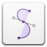

#!++ is a Debian Linux distribution based on the 2015 release, 8.0 (Jessie). Openbox and tint2 fill the gap left without a traditional desktop environment. While possibly less friendly to new users, there's no denying its incredible speed and efficiency.
The distro currently is only distributed via .torrent files of Debian's netinstall. Both 32-bit and 64-bit .iso images are available, and non-PAE computers are _not_ supported. A fresh install uses approx. 1GB of local storage and runs idle around ~100MB of RAM.
Debian Jessie ships with kernel 3.16+, and primary default applications include Terminator, Thunar, and Geany for terminal, file manager, and text editor respectively.
Loclist is a C++ webapp written using FCGI to process URL parameters to interact with a server and it's local SQL database. Using bootstrap for mobile interface compatibility and relying on maps applications to pick up the responded addresses, Loclist provides a nearly seemless experience for end users and administrators.
The project is built using libfcgi, libfcgi++, and libmysqlcppconn.
All source code will soon be released via Github under the zlib license. But for the time being, the sources that developed into the project are available under the prefix fcgi-sql-*.
View the live demo below with the following credentials [username:password] [acc1:acc1pass] for a standard user, or [admin:admin] for the administrative panel. *best experienced on a mobile interface

Concoord is a hastily written xml parser particularly geared towards converting an .svg file's two dimensional point coordinates to a generated C header file.
The intended use case for the binary was to extract a single layer (and only a single layer) for use with the SDL2_gfx library for faster development of scenes rendered using large quantities of polygons.
While the binary is limited to .svg files containing a single polygon, it's not limited to any number of input files. Via standard *nix terminal command parameters, many files can be passed at a time.
{kind=link}
{kind=link}
{kind=link}